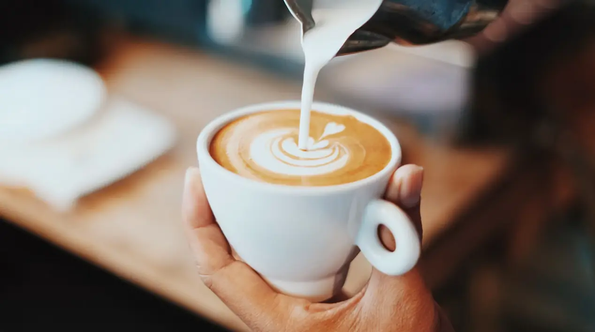
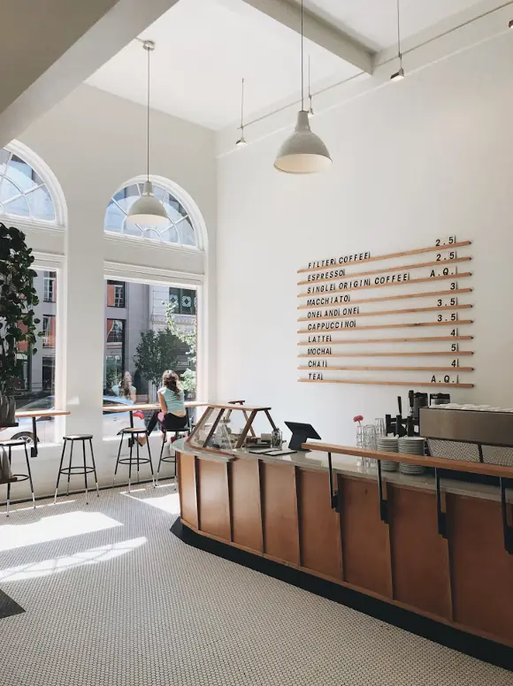

First Saturday · 4 PM
Latte art throwdown
Sixteen baristas, bracket style, three judges and a very loud crowd. $5 to enter, free to watch. Winner drinks free for a month.
Our story
Seventh Hour opened in 2021 in a former bike shop on 1st Ave N. The name comes from the hour we love most: 7 AM, when the light hits the block and the first regulars walk in.

Since2021
The founders
Mari Okafor spent eight years pulling shots in Atlanta and Chicago. Jess Lindqvist ran the books for a restaurant group in Tampa. They met in a pour-over class, argued about grind size for an hour, and started planning a shop that afternoon.
Their rule from day one: every drink should taste good without the syrup, and every guest should feel like a regular by their third visit.
Co-founder, head of coffee. Dials in the espresso every morning at 6:15.
Co-founder, runs the shop and the events calendar. Makes a mean ricotta toast.

Roasting partner
We don't roast in the shop. We partner with a small roaster who buys directly from three farms we've visited, and who lets Mari sit in on every cupping. Together we build each blend, approve each roast profile and taste every batch before it ships.
We close the espresso bar at 3 and open the doors back up for the neighborhood.

First Saturday · 4 PM
Sixteen baristas, bracket style, three judges and a very loud crowd. $5 to enter, free to watch. Winner drinks free for a month.
Sundays · 7:30 AM
A 5K loop along the waterfront, all paces welcome, then $1 off any drink when you get back.
Second Friday · 6 PM
Acoustic sets, poetry and the occasional comedian. Sign-up sheet goes up at 5:30.
The shop seats 40 after hours. Book it for a meetup, a workshop or a birthday.